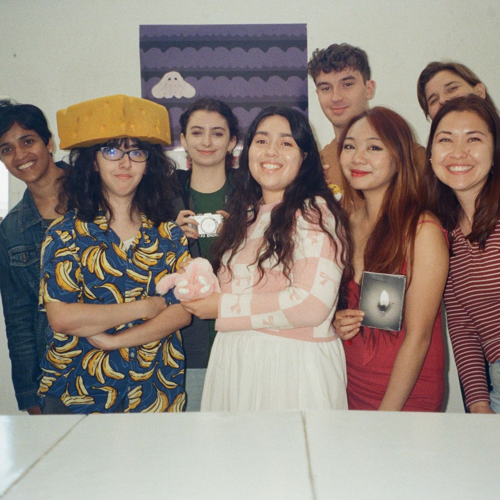

Design 1B — Form and Meaning
Design 1B: Form and Meaning is a studio course that investigates how meaning is conveyed through visual form. It serves as an introduction to the visual communication design process, emphasizing the integration of conceptual thinking with formal experimentation. Students explore visual metaphor, symbols, and the combination of type and image, while critically examining ideas of neutrality, universality, and tradition.
Through hands-on projects, students work with both analog and digital methods to develop original design solutions. The course emphasizes iterative practice, building on weekly work to strengthen conceptual ideas, graphic skills, and creative problem-solving. Students create and analyze work for both print and screen, gaining fluency with contemporary tools while developing a distinct visual approach.
Learning Goals
By the end of the course, students will:
- Understand image as a tool of communication and expression
- Learn key design terminology
- Work with images at both small and large scales
- Work with images in analog and digital media
- Become familiar with historical and contemporary designers
- Understand how graphic design fits into the broader design discourse
- Demonstrate an understanding of graphic principles and techniques
- Gain practice in a research-based, iterative process of making graphic design
- Control meaning and visual impact through the use of different image types and means of interpretation
- Analyze a problem, develop concepts in response to that problem, and be self-critical about the work you make
- Engage in critiques, both as a presenter of visual work and as a thoughtful and challenging (yet gracious) commentator on the work of your peers
- Follow a clear process in each project: research, sketch, synthesize, refine, craft, and present


Student Nikki Ficarra

Student Dhriti Hegde

Student John Abatto

Student Megan Rumsby

Student Sonia Dass